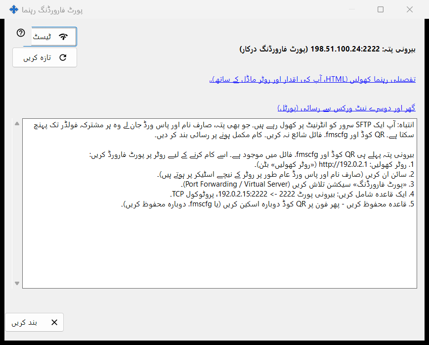
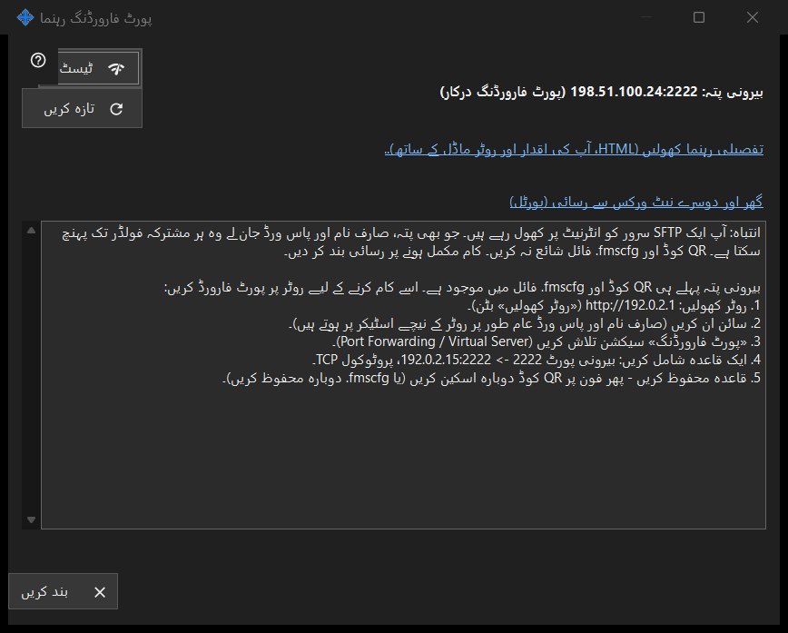

پورٹ فارورڈنگ رہنما
یہ کس مقصد کے لیے ہے
شیئر کو آپ کے گھر کے نیٹ ورک کے باہر سے قابلِ رسائی بنانے میں مدد کرتی ہے۔ یہ بیرونی پتہ دکھاتی ہے اور یہ بھی کہ پورٹ خود بخود کھلا یا روٹر پر فارورڈ کرنا ہوگا، اور ایک جانچ اور تفصیلی رہنما دیتی ہے۔ یہ مرکزی ونڈو کے انٹرنیٹ رسائی کیسے ترتیب دیں بٹن سے کھلتی ہے۔


اس ترتیب میں
- پہلے شیئرنگ شروع کریں؛ ورنہ ونڈو آپ سے کہتی ہے۔
- حالت کی لائنیں پڑھیں: قابلِ رسائی، CGNAT کے پیچھے، یا پورٹ فارورڈنگ درکار۔
- فارورڈنگ درکار ہو تو تفصیلی رہنما کھولیں اور روٹر پر اصول بنائیں۔
- اس پی سی سے پتے کو پرکھنے کے لیے ٹیسٹ دبائیں۔
- فون سے موبائل ڈیٹا پر، اس کا Wi-Fi بند کرکے، تصدیق کریں۔
عناصر
حالت
ونڈو بیرونی پتہ پہچانتی ہے اور ان میں سے ایک کہتی ہے: انٹرنیٹ سے قابلِ رسائی، بیرونی پتہ: .. (پورٹ فارورڈنگ درکار)، بیرونی پتہ نامعلوم - روٹر میں دیکھیں۔ یا CGNAT کے پیچھے - باہر سے قابلِ رسائی نہیں۔ جب پورٹ خود بخود کھل گیا ہو (UPnP) تو روٹر کی ترتیب درکار نہیں، پھر بھی یہ چلتا ہے یا نہیں، اس کی تصدیق صرف موبائل ڈیٹا والا فون کر سکتا ہے۔ تازہ کریں شناخت دہراتا ہے۔
روٹر اور رہنما
روٹر کی لائن اس کا پتہ دکھاتی ہے، یا تلاش کے دوران روٹر پہچانا جا رہا ہے.. دکھاتی ہے۔ لنک تفصیلی رہنما کھولیں (HTML، آپ کی اقدار اور روٹر ماڈل کے ساتھ).. مقامی HTML رہنما کھولتا ہے؛ نہ کھل سکے تو ونڈو یہ بتاتی ہے۔ لنک گھر اور دوسرے نیٹ ورکس سے رسائی (پورٹل) براؤزر میں مدد کے پورٹل کا متعلقہ صفحہ کھولتا ہے۔
ٹیسٹ
بیرونی پتے کو اس پی سی سے پرکھتا ہے اور بتاتا ہے: SFTP سرور قابلِ رسائی، پورٹ کھلا ہے مگر SFTP نے جواب نہیں دیا، بند کنکشن (شاید کنکشنز کی حد)، یا کوئی جواب نہیں۔ یہ حتمی نہیں: بہت سے روٹر اندر سے اپنے ہی بیرونی پتے پر آنے والی درخواست مسترد کر دیتے ہیں، اس لیے قابلِ اعتماد جانچ موبائل ڈیٹا پر فون ہے۔
حفاظت
SFTP کو انٹرنیٹ پر کھولنے سے ہر شیئر کیا گیا فولڈر ہر اس شخص کو مل جاتا ہے جو پتہ، لاگ ان اور پاس ورڈ جان لے۔ QR کوڈ یا .fmscfg فائل شائع نہ کریں اور کام ختم ہونے پر شیئرنگ بند کر دیں۔ بند کریں ونڈو سے باہر نکلتا ہے۔
مینیجر کی ترتیبات · SFTP اشتراک کی ترتیبات · ایکسچینج سرور کی ترتیبات